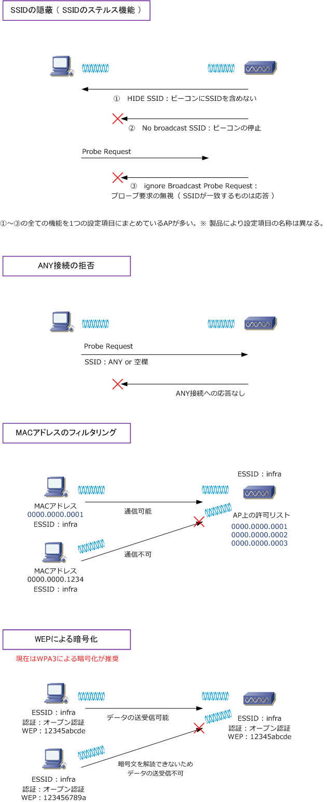

Wireless LAN - Security
無線LANのセキュリティ上の問題
無線LANではデータを電波に乗せて伝送する特性上、有線LANに比べてセキュリティの問題が多くあります。
| 無線LANにおけるセキュリティ上の問題 | |
|---|---|
| 不正接続 ( 侵入 ) | 有線LANでは、データの不正接続を行うためには必ず物理接続が必要となるが、 無線LANでは、電波の届く範囲において周波数（チャネル）と変調方式があえば 許可なく無線LANフレームが得られて、それによりESSIDなどの情報が得られる。 APに認証または暗号化の設定がない場合は容易に不正接続を行うことができる。 |
| 不正傍受 ( 盗聴 ) | 無線LANへの不正接続の後、データの暗号化が行われていない場合、無線LANの パケットを傍受して簡単に復元できる。これにより外部への情報流出の可能性もある。 |
| 不正AP ( おとり ) | 正当なAPと同じ設定を行い、正当なAPにみせかけて、正当なWLAN端末を接続させて IDやパスワード情報を不正に傍受するフィッシング詐欺の一種。APフィッシングともいう。 |
※ その他、自動車などで移動しながら電波を拾い、セキュリティ実装の甘いAPを探す行為をウォードライビングといいます。
無線LANのセキュリティ対策 ( 従来の実装 )
上記で紹介した無線LANのセキュリティ上の問題点に対して、以下のようなセキュリティ対策があります。
| 無線LANにおけるセキュリティ上の対策 | ||
|---|---|---|
| 問題点 | セキュリティ対策 | 内容 |
| 不正接続 | ESSIDの隠蔽 | ESSIDはビーコンやプローブに平文で含まるため、誰でも簡単に入手できる。 ESSIDの隠蔽とは、① ビーコンにESSIDを含めない ② そもそもビーコンを ブロードキャストしない ③ ESSIDが一致しない限り、プローブ要求を無視 するという3つの実装のこと。ESSIDステルスとも呼ばれる。AP側で設定する。 |
| 不正接続 | ANY接続の拒否 | 無線LANでは、ESSIDが分からない場合でも無線LAN接続可能な方法がある。 APで 「ANY接続許可」 の設定状態である場合、WLAN端末はESSIDをANY または空欄した場合は無線LAN接続が可能となる。これはAP側で無効にする。 |
| 不正接続 | MACアドレスの フィルタリング |
WLAN端末の無線LANカードのMACアドレスにより、無線LAN接続を許可するか どうかを判断する実装。あらかじめAPに登録したMACアドレスのWLAN端末のみ アクセスできるようにする。MACアドレスという一意の識別情報を利用した実装。 |
| 不正傍受 | WEPによる暗号化 | WEPとは、IEEE802.11において定義されている通信データの暗号化機能のこと。 WEPは、RC4アルゴリズムをベースとした共通鍵暗号を採用しており、暗号化の 際には64ビット or 128ビットの共通鍵が使用される。APとWLAN端末側で実装。 ※ 現在はWEP、WPA、WPA2ではなく WPA3 による暗号化が推奨されています。 |
| 不正AP | 無線LAN コントローラの導入 |
無線LANコントローラにより、不正APの監視、検知、排除を行うことができる。 また、干渉回避、カバレッジホール解消、出力調整、動的チャネル割り当てなど の自動調節を行いAPのパフォーマンスを最適化する（ Cisco WLCの実装例 ） |

無線LANのセキュリティ対策 (さらなるセキュリティ対策)
上記で紹介したセキュリティ対策にはいくつかの欠陥がある。そこでさらなるセキュリティ対策を紹介します。
| 無線LANにおけるセキュリティ上の対策 | |||
|---|---|---|---|
| 問題点 | セキュリティ対策 1 | セキュリティ対策1の欠陥 | さらなるセキュリティ対策 2 |
| 不正接続 | ESSIDの隠蔽 | この実装は行うべきだが、アソシエーション の際にはSSIDが必要である上に、SSIDは 暗号化されないので完全な秘匿は不可能。 |
ESSIDは漏洩されること前提として 以下のセキュリティ対策を実装する。 ① デフォルト値は変更する ② 興味を持たれる名前にしない |
| 不正接続 | ANY接続の拒否 | 特に問題なし（実装すればOK） | 特になし |
| 不正接続 | MACアドレスの フィルタリング |
無線LANカードの紛失または盗難にあって それが不正利用された場合、不正接続を 阻止する術はない。また、MACアドレスは 偽造可能であるため、なりすましによる不正 接続が行われた場合はこれを阻止できない。 |
認証サーバを導入して集中管理する 実装を行う。予算的に認証サーバを 導入できなくMACのフィルタリングを 行う場合、NICの資産管理を徹底する。 |
| 不正傍受 | WEPによる暗号化 | 全員が同じWEPキーを共有していることから 誰か一人のWEPキーが漏洩した場合、全員 の通信データを解読されてしまう。また、WEP には脆弱性があり、脆弱なパケット(Weak IV) を入手できればWEPキーが解読されてしまう。 |
WEPを利用する場合は以下の対策 ① WEPキーの定期的な変更 ② AP毎に異なるWEPキーを設定 ③ 128bitのWEPキーの使用 |
| 不正AP | 無線LAN コントローラ導入 |
特に問題なし（導入すればOK） | 特になし |
※ 現在の企業ネットワークでは、上記で紹介したセキュリティ対策よりもさらに高度なセキュリティ実装を行っています。